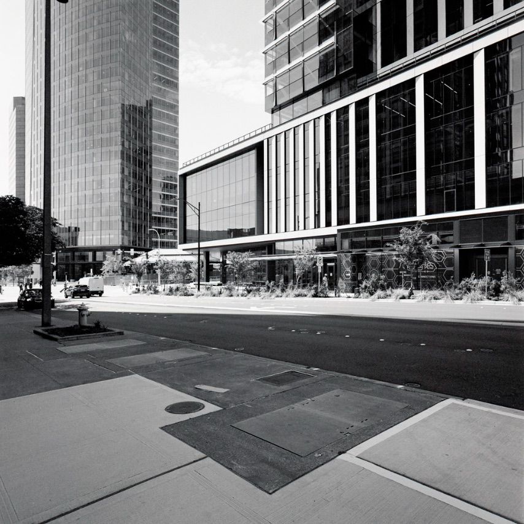
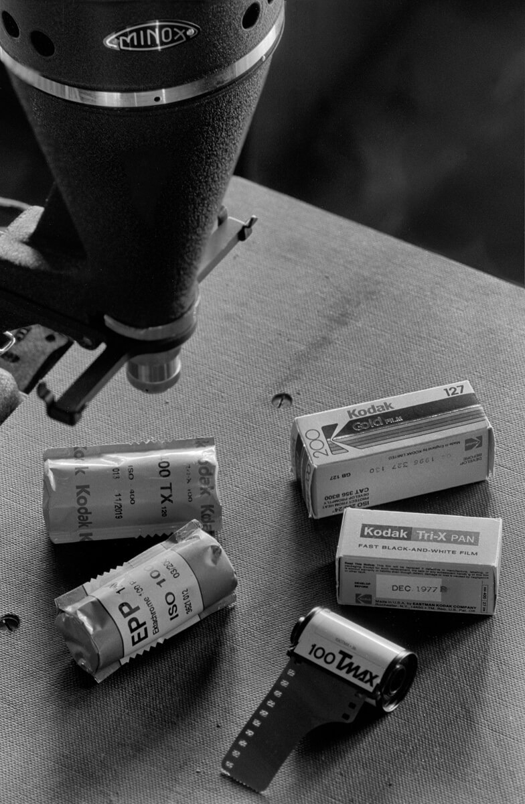
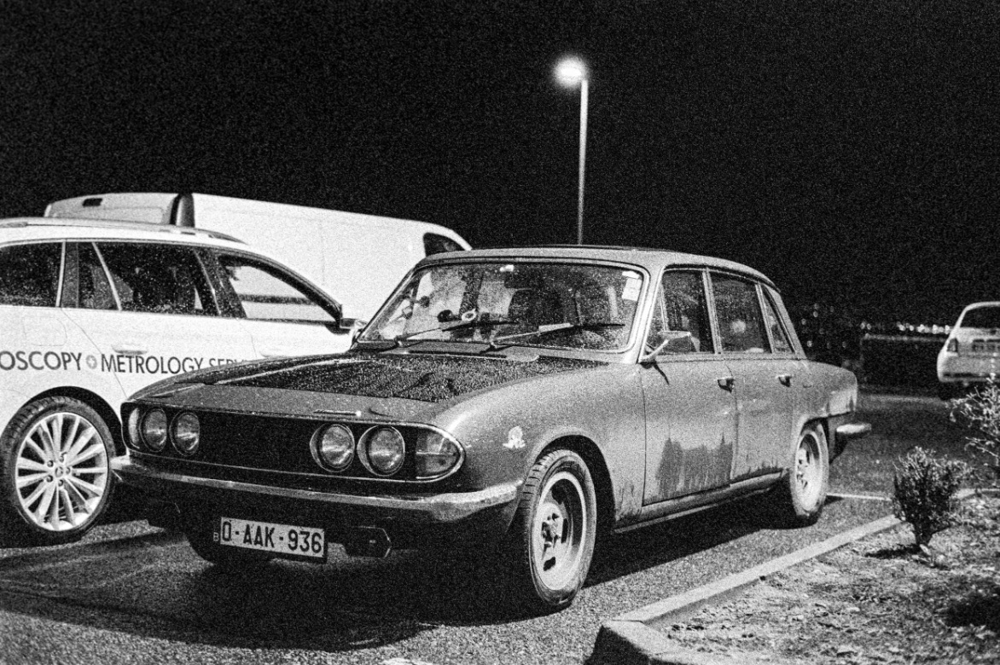

一卷胶卷，给二手胶片机做全面体检｜暗病一次全露出来
二手胶片机最坑的不是贵，是暗病当场看不出来。快门拖沓、机身漏光、卷片齿轮打滑、测光偏两档，全藏在外观底下。你把机身翻来覆去看半小时，唯一能确定的就是它挺好看。
真正的检验只有一个办法：用一卷胶卷。这篇就是那套流程——照顺序拍，对着表读。

一、先算账：体检只要 ¥50–70
体检那卷不用好卷：Fomapan 100 参考价 ¥28–38，配最便宜的冲扫（黑白约 ¥20–30），整次体检 ≈ ¥50–70。而一台快门拖沓的机身，能让你连废三卷——两三百块外加三个周末。这笔钱是保险费。
二、这卷怎么拍：6 项
顺序很关键：先拍机械，别急着创作。卷只有一卷，景物随时能拍。
三、报告怎么读：一张对照表
底片出来按现象对表。单项现象只是线索，定案要看「同一位置是否重复出现」。
| 现象 | 指向 | 还能用吗 |
|---|---|---|
| 某几档偏亮/偏暗 | 对应快门档失准 | ✅ 能修 |
| 1/1000 偏亮 | 高速档拖沓（老机常见） | ⚠️ 多数能调 |
| 同位置反复出现光斑 | 机身漏光（机背或铰链） | ✅ 多是密封条 |
| 只在卷首/卷尾漏 | 装卸片时曝光 | ✅ 非机身问题 |
| 彩负漏光发红发橙 | 光从片基背面进入 | ⚠️ 需结合位置 |
| 间距一张比一张窄 | 卷片渐进打滑 | ❌ 要开机修 |
| 随机叠片、压掉半格 | 走片或装片没到位 | ⚠️ 先排除操作 |
| 齿孔边缘被咬坏 | 齿轮没咬合 | ❌ 硬伤 |
| 整卷测光偏暗>1 档 | CdS 老化或电池电压 | ✅ 多半换电池 |

四、测光偏暗？先别怪测光表
最容易误判、也最容易白花钱的一项。老机测光偏，最常见两个原因都指向欠曝：一是 CdS 测光元件老化，电阻下降、读数偏高，拍出来偏暗；二是电池电压不对——很多老机原厂是 1.35 V 水银电池（如 PX625），这类电池 1996 年已在美国停售，换常见 1.5 V 碱性电池会因电压偏高欠曝一档以上。
量级说法不一：维修圈经验值是最多约两档，个例到四档。⚠️ 但留个反面：部分机型电桥电路自带稳压，换电池完全不受影响。另外手机测光 App 只能当相对参考——有 App 明确要求用户自己做 −2 EV 校准才准。
先花三块钱换对电池，再决定要不要花三百块修测光。
五、能修 vs 直接退
| 故障 | 依据 | 处理 |
|---|---|---|
| 密封条失效（漏光） | 同位置重复漏光＋目视粉碎 | ✅ 自己换，最便宜 |
| 快门档位失准 | 某几档实拍明显偏亮/暗 | ✅ 常规保养项目 |
| 测光偏差 | 整卷系统性偏暗 | ✅ 先换对电池再判 |
| 间距渐进变窄 | 间距越来越窄 | ⚠️ 先谈价再决定 |
| 帘布破洞／齿孔被咬坏 | 底片规则痕迹、齿孔损伤 | ❌ 别买 |
| 镜头菌丝、雾气 | 对光看镜片内部 | ❌ 别买，会恶化 |
密封条是整份体检性价比最高的一项：老机通病——1960 年代起的机背门封与反光镜缓冲垫多为泡棉，会分解成粉尘或焦油状。材料是自粘海绵，通道通用厚度 1–2 mm（常见 1 mm，部分机型槽缝与铰链按 1.5 mm 裁）。⚠️ 但有维修者公开反对无经验就自己拆，主张送修——没拆过机器的，把它当「可以省」而不是「必须自己上」。
六、这套体检测不出什么
1/1000 秒基本判不了。 网传「手机慢动作数帧法」（240 fps 录像，数亮帧÷240）有厂商技术来源：慢速段与台式仪器对拍吻合，但受采样定理限制，上限约 1/120 秒，1/500 秒起不可靠——所以第三节我只写「拖沓」，没给阈值。
判据本身也分级别。 常被引用的「高速端 ±30%、低速端 ±20%」确有其表，但来自维修店公布的验收表，不是国际标准（Compur 原厂手册更严：1/100 及更慢 ±15%）。也就是：底片只偏一点点，不等于机器坏了，别拿网传数字去跟卖家吵。
七、一句话版
先花 ¥50 做体检，再决定要不要花 ¥500 修。 顺序反了，两笔钱都得付一遍。

数据来源
快门口径与容差：Flutot's 快门验收表、DIN 19015 整理页、Photrio 讨论、Stearman Press 快门自测、Kamerastore 测试分级。漏光与叠片：Photostudio Berlin 漏光成因／画幅重叠、Dutch Thrift 密封条检测、Japan Camera Hunter 购机指南。测光与电池：CdS 老化欠曝、水银电池资料、手机测光校准。清单与密封条：购机检查清单、iFixit 密封条更换、High 5 Cameras 指南、Old Cams by Jens、反对自行更换。
⚠️ 口径说明：快门容差、漏光判读、测光偏差方向、密封条厚度均为维修店与二手商公布的经验口径，不是厂商标准；「±30%/±20%」尤其只是单一维修店的验收表。CdS 老化误差量级无厂商规范，个例差异很大。机身具体表现以你自己的实拍测试为准。
你收二手胶片机踩过哪个坑？
陪你做体检的便宜口粮卷（都有实拍样片）
Fomapan 100（约 ¥28–38） Fomapan 400 Action（约 ¥30–40） Kentmere 400（约 ¥45–60） Kentmere 100（约 ¥45–60）
去胶卷库看看这几卷
「胶卷档案」是一个可搜索的胶卷资料库：每卷都有规格、特性、使用感受、参考价与实拍样片。搜品牌或型号就能直达。